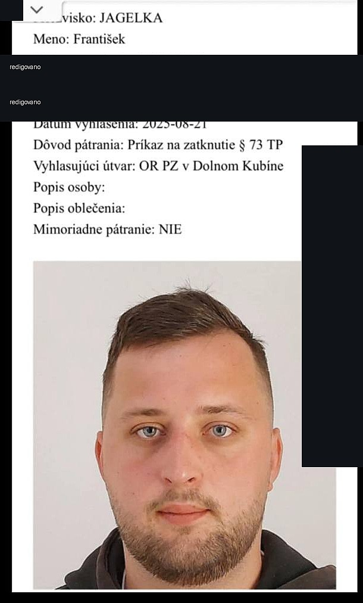

406EX 228/20
Publikace z 14.07.2020 uvádí vykonatelný platební rozkaz 31Up/1441/2019 ze dne 11.11.2019 a jistinu 70,70 EUR plus příslušenství.
Otevřít úřední záznamPozor na hlášené podvody
Poškození popisují falešné platby, prodej lístků bez skutečné úhrady, sliby práce v zahraničí, práci s aliasy, úředně doložené civilní exekuční publikace a historické stopy k pátrání / zatykači.
Tato stránka slouží jako prevence. Neslouží k fyzické konfrontaci, doxxingu ani nátlaku. Pokud jsi poškozený, ukládej důkazy a řeš věc přes banku, platformu a policii.
Ve veřejné rešerši nebyl dohledán pravomocný trestní rozsudek za podvod. Úřední civilní exekuce samy o sobě neprokazují trestný čin.
Hlavní komunitní zdroj
Hlavní místo pro průběžné výpovědi, veřejné posty a koordinaci poškozených je skupina Fero Jagelka - podvodnik.
Kdo to je
Varování se týká osoby označované ve zdrojích jako František Jagelka. Archivované zprávy zmiňují také komunikaci pod jmény nebo aliasy Fero, Martin, Ľubko a Matúš / Matus Stas.
Úředně doložené
OSINT report doplnil dvě úřední publikace v Obchodném vestníku SR. Jde o civilní exekuční tituly, ne o trestní rozsudek ani důkaz podvodu.
Publikace z 14.07.2020 uvádí vykonatelný platební rozkaz 31Up/1441/2019 ze dne 11.11.2019 a jistinu 70,70 EUR plus příslušenství.
Otevřít úřední záznamPublikace z 21.08.2025 uvádí vykonatelný platební rozkaz 15Csp/23/2024-50 ze dne 14.02.2025 a jistinu 1 762,40 EUR plus příslušenství.
Otevřít úřední záznamSoučet publikovaných jistin je 1 833,10 EUR, bez příslušenství, nákladů, úhrad a změn po publikaci. Tato částka není potvrzená škoda z podvodů ani dnešní celkový dluh.
Co lidé hlásí
Jedna osoba popisuje prodej lístku na Beats for Love: po údajném potvrzení platby lístek odeslala, peníze nepřišly a následovaly výmluvy. PodvodNaBazaru #22420 dále obsahuje červnová hlášení k Rock for People a komentáře s tvrzenými částkami 5 500 Kč a 8 000 Kč; nejde o úředně potvrzenou škodu.
archiv: prodej lístku PodvodNaBazaru #22420
Archivované zprávy opakovaně zmiňují screenshoty plateb, bankovní výmluvy a odkládání, které měly vytvořit dojem, že platba už odešla.
Ve zdrojovém exportu je odkaz na článek Nového Času o slibované práci v Norsku. Stránka ho uvádí jako veřejnou stopu k ověření.
Nový Čas URL archiv: odkaz na článek archiv: sdílený odkaz
Poškození a účastníci archivu řešili podezření na zneužití osobních údajů, účtů a úvěrů. Detaily rodiny a dokladů nejsou veřejně opisovány.
Archiv odkazuje na ověřování přes veřejné portály a zmiňuje exekuce. Samostatně existují dvě úřední publikace v Obchodném vestníku SR z let 2020 a 2025.
Obchodný vestník SR archiv: exekuce archiv: ověřování archiv: portál
Zprávy řeší podávání trestních oznámení, předávání důkazů a postup poškozených v Česku i na Slovensku.
archiv: poškození archiv: policie archiv: oznámení archiv: banka archiv: postup archiv: ČR/SR
Jak funguje schéma
Působí komunikativně, nabízí osobní setkání nebo „rozumné“ vysvětlení.
Ukáže údajnou bankovní transakci, ale reálná platba na účet nedorazí.
Vysvětluje zpoždění bankou, chybějícími údaji nebo jiným platebním postupem.
Po konfrontaci se podle hlášení objevuje blokace, jiné jméno nebo nový profil.
Co se lidem stalo potom
Poškození popisují, že poslali lístek nebo údaje, ale platba nepřišla.
V archivu se řeší občanské průkazy, banky, registry a podezření na úvěry.
Lidé řešili banku, platformy, policii a koordinaci trestních oznámení.
U citlivých případů se objevují obavy ze splátek, dluhů a následků pro okolí.
Zatykač / pátrání
Redigovaný screenshot pátrání uvádí „Príkaz na zatknutie § 73 TP“, datum vyhlášení 21.08.2025 a útvar OR PZ v Dolnom Kubíne. Osobní údaje jsou začerněné.
Podle archivovaných zpráv a veřejných úryvků byl řešen slovenský příkaz k zatčení a později se objevilo tvrzení o evropském zatykači. Živý úřední záznam k evropskému zatykači nebyl při poslední kontrole dohledán, proto je tvrzení uvedené jako zdrojově kvalifikované.
Podle právního vysvětlení Slov-Lex je příkaz k zatčení procesní nástroj k zajištění účasti obviněného v trestním řízení; ani autentický příkaz by sám o sobě nebyl pravomocným odsouzením.
Patranie.sk stopa archiv: screenshot pátrání archiv: slovenský zatykač archiv: EAW odkaz archiv: evropský zatykač archiv: ověření stavu ověřit aktuální stav

Co není prokázáno
Ve veřejně vyhledaných zdrojích k 25.06.2026 nebyl nalezen pravomocný trestní rozsudek, který by bezpečně odsuzoval tuto osobu za podvod. To nevylučuje neveřejné nebo probíhající řízení.
Historická stopa příkazu k zatčení je důležitá, ale živý aktuální stav má ověřovat policie. Informace o hledané osobě patří na linku 158 nebo nejbližší útvar PZ, ne do osobní konfrontace.
U internetových profilů, telefonů, e-mailů a účtů je potřeba počítat s prostředníky, převzetím účtu, zneužitím identity nebo chybou oznamovatele.
Timeline
Datum platebního rozkazu 31Up/1441/2019 později uvedeného v exekuční publikaci. úřední záznam
Zveřejnění exekučního oznámení 406EX 228/20 v Obchodném vestníku SR; jistina 70,70 EUR plus příslušenství. úřední záznam
První upozornění na jména/aliasy Fero, Martin, Ľubko; zmínky o exekucích a sporných potvrzeních platby. archiv exekuce platba aliasy
Citlivé tvrzení o dopadu na blízké osoby a úvěrech; na webu zpracováno obecně bez rodinných detailů. číst v archivu
Datum platebního rozkazu 15Csp/23/2024-50 později uvedeného v exekuční publikaci. úřední záznam
Odkaz na článek Nového Času o práci v Norsku. archiv veřejná URL
Popis prodeje lístku na Beats for Love, screenshot platby a nepřijetí peněz. číst v archivu
Odkazy na ověřování přes portály Ministerstva spravedlnosti SR. archiv portál
Koordinace trestních oznámení a rady pro poškozené. poškození policie oznámení banka
V archivu se objevuje fotka OP; neredigovaně není publikována. číst v archivu
Zveřejnění exekučního oznámení 406EX 358/25; zároveň screenshot pátrání uvádí „Príkaz na zatknutie § 73 TP“ a OR PZ v Dolnom Kubíne. úřední exekuce archiv pátrání
Diskuze rozlišuje slovenský zatykač a mezinárodní/evropský zatykač; padá odkaz na EU vysvětlení EAW. slovenský zatykač EAW odkaz
Archivované zprávy tvrdí, že se objevil evropský zatykač před zadržením; uvedeno pouze jako archivované tvrzení. tvrzení navazující zpráva
Zprávy tvrdí, že zatykač už není na webu ministerstva. ověření navazující zpráva
Vznik veřejného reportu PodvodNaBazaru #22420; komentáře z 17.-18.06.2026 uvádějí tvrzené částky 5 500 Kč a 8 000 Kč. veřejný report
Poslední položka lokálního zdrojového archivu.
Co dělat, když tě kontaktuje
Screenshot platby není platba. Čekej na skutečné připsání peněz.
Nepředávej občanku, rodné údaje, celé číslo účtu ani přístupy do banky.
Ulož chat, profily, screenshoty, časové údaje a bankovní pohyby bez úprav.
Kontaktuj banku, platformu a policii. Pokud jde o úvěr, řeš i úvěrové registry.
Co přiložit policii / bance
Výpis, čas transakce, částka, účet příjemce, transakční ID, zpráva pro příjemce a komunikace s bankou.
Úplný export konverzace, URL profilu, uživatelské jméno, časové údaje a původní e-maily včetně hlaviček.
URL inzerátu, ID účtu, původní PDF vstupenky, objednávka, potvrzení pořadatele a stav QR/barcode bez veřejného zveřejnění.
U důkazních souborů ulož originál, pracovní kopii, datum získání a SHA-256 hash.
Zdroje a odkazy
Hlavní veřejná skupina s výpověďmi, posty, komentáři a průběžnými aktualizacemi.
Otevřít hlavní Facebook skupinuCelý zdrojový export převedený do čitelného chatového formátu s redakcí soukromých údajů.
Číst archivVeřejný report z 16.06.2026 s komentáři o transakcích se vstupenkami a tvrzenými částkami.
Otevřít reportExekuční oznámení 406EX 228/20, publikace z 14.07.2020.
Otevřít záznam 2020Exekuční oznámení 406EX 358/25, publikace z 21.08.2025.
Otevřít záznam 2025Odkaz na článek o slibované práci v Norsku, nalezený ve zdrojovém exportu.
Otevřít URLStopa k pátrání a obecné vysvětlení evropského zatýkacího rozkazu.
Patranie.sk stopa EAW vysvětlení EU Slov-Lex: príkaz na zatknutie MV SR: pátranie po osobáchObecné pokyny pro trestní oznámení a hlášení internetových podvodů.
Oznámení trestného činu Objednané zboží nedorazilo Podvody na internetuVeřejné vyhledávací úryvky zmiňují Patranie.sk a „Príkaz na zatknutie“. Primární komunitní odkaz je hlavní FB skupina výše.
Úryvek 1 Úryvek 2Lokální result.json obsahuje zprávy a média. Veřejná stránka odkazuje na čitelný archiv a používá jen redigované assety.